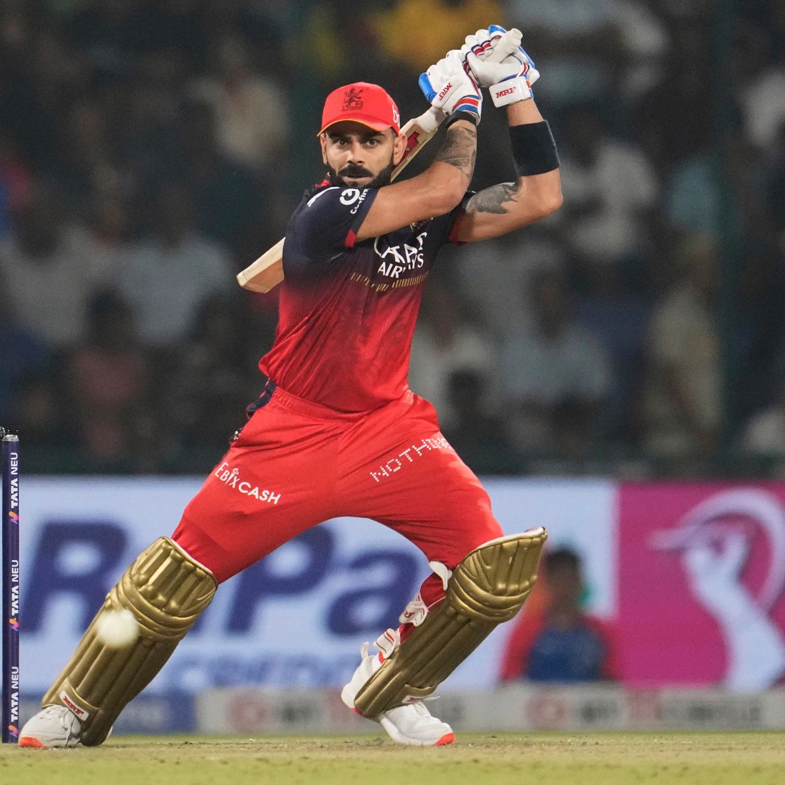
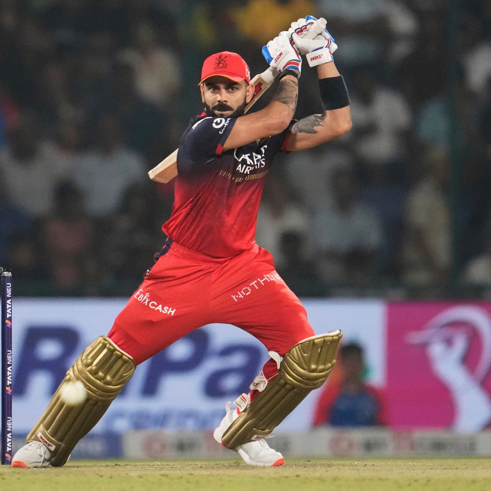

Tribute to Virat Kohli
 


Virat Kohli (born 5 November 1988) is an Indian international
cricketer who plays ODI cricket for the national team and is a
former captain in all formats. He is a right-handed batsman and
occasional right-arm medium pace bowler. Considered one of
the greatest all-format batsmen in the history of cricket, he is
called the King, the Chase Master, and the Run Machine for his
skills, records and ability to lead his team to victory. Virat Kohli
is one of the most iconic and influential cricketers
of the modern era. Born and raised in Delhi, he developed a deep
love for cricket at a young age and worked tirelessly to turn his
passion into a profession. Over the years, Kohli has become a symbol
of dedication, discipline, and fierce determination.
Known for his intense energy on the field, he plays the game with
heart and emotion, inspiring millions of fans around the world. His
journey from a young aspiring cricketer to a global sports
personality reflects his never-give-up attitude and relentless
pursuit of excellence.
Virat Kohli's journey is a
powerful reminder of how talent, when backed by hard work and
belief. From training on dusty grounds in Delhi to facing the
world's best bowlers under pressure, Kohli has faced many
personal and professional challenges. What makes him stand out is
not just his skill, but the mindset he brings to the game.
He's known for being fiercely competitive, emotionally
expressive, and mentally tough. Whether it's a
high-pressure
chase or a moment of defeat, Virat has always shown resilience and
passion that sets him apart from the rest.
Off the field, Kohli
is a youth icon and a role model for fitness, focus, and style. He
transformed not only his game but also his lifestyle, inspiring
millions to adopt healthy habits and a goal-driven mindset. His
journey is more than a cricketing success story — it's
about self-belief, consistency, and evolving with purpose.